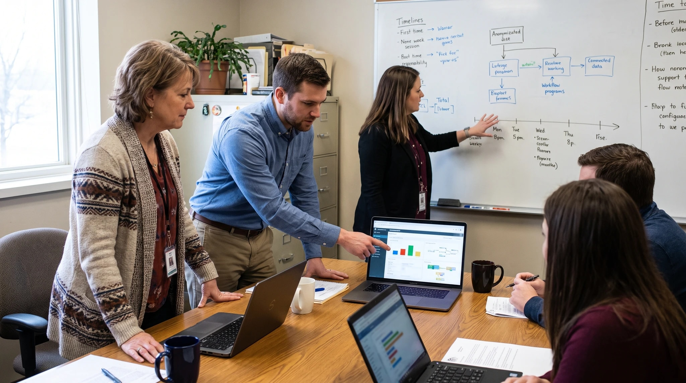

Understanding the Total Cost of Ownership for EHR Systems: A Comprehensive Guide for Healthcare Organizations

6 min read
Understanding the total cost of ownership (TCO) for EHR systems is crucial for healthcare organizations aiming to make informed financial decisions. Our clients often find that the initial purchase price is just the tip of the iceberg, as ongoing costs can significantly impact their budgets over time.
In the complex landscape of healthcare technology, where every dollar counts, it is imperative for organizations to grasp the full scope of expenses associated with EHR systems. From implementation and training to ongoing maintenance and upgrades, the TCO encompasses a wide range of factors that can influence financial planning and operational efficiency. By delving into these components, we can better equip our clients to manage their resources effectively and achieve their organizational goals.
Defining Total Cost of Ownership in EHR Systems
Total cost of ownership refers to the comprehensive assessment of all costs associated with acquiring and operating an electronic health record (EHR) system over its entire lifecycle. This includes not only the upfront costs of purchasing the software and hardware but also the ongoing expenses related to maintenance, training, support, and potential upgrades. Our clients often overlook these factors, leading to budgetary surprises down the line.
To effectively understand TCO, organizations must consider the following components:
Initial acquisition costs
Implementation expenses
Training and onboarding costs
Ongoing support and maintenance fees
Upgrades and enhancements
Operational costs, including staffing and infrastructure
By taking a holistic view of these costs, our clients can make more informed decisions that align with their long-term financial strategies.
Initial Acquisition Costs: What to Expect
The initial acquisition costs of an EHR system typically encompass the price of the software license, hardware requirements, and any associated implementation fees. Our clients often find that these costs can vary widely based on the chosen EHR platform (a careful EHR selection process helps here), the size of their organization, and the specific modules required for their operations.
For instance, organizations opting for a cloud-based EHR solution might experience lower initial hardware costs compared to those implementing an on-premise system. However, it is essential to evaluate the trade-offs between initial costs and long-term operational efficiency, as well as the potential for scalability as the organization grows.
Implementation Expenses: Planning for Success
Implementation expenses can often be underestimated, leading to budget overruns and project delays. Our clients must recognize that successful EHR implementation involves not only the technical aspects of software installation but also the critical processes of data migration, system configuration, and user training.
To mitigate risks and ensure a smooth transition, organizations should allocate sufficient resources for the following:
Data migration planning and execution
System configuration tailored to organizational workflows
Comprehensive user training programs
Testing and validation of the system pre-launch
By proactively addressing these components, our clients can enhance their chances of a successful EHR implementation that minimizes disruptions to patient care and operational workflows.
Ongoing Support and Maintenance: A Continuous Investment
Ongoing support and maintenance are critical components of the total cost of ownership that organizations must account for throughout the lifecycle of their EHR systems. Our clients often overlook the fact that software systems require regular updates, technical support, and troubleshooting to ensure optimal performance and compliance with industry regulations.
Organizations should budget for:
Annual maintenance fees, which can be a percentage of the software license cost
Technical support services, including help desk assistance
Regular software updates and patches to maintain security and functionality
By understanding these ongoing costs, our clients can develop a more accurate financial plan that supports their long-term operational goals.
Training and Onboarding Costs: Investing in Human Capital
Training and onboarding costs are often significant contributors to the total cost of ownership for EHR systems. Our clients must recognize that investing in comprehensive training programs is essential for maximizing user adoption and minimizing productivity losses during the transition period.
Effective training should encompass:
Initial training sessions for all users
Ongoing refresher courses and updates as new features are introduced
Access to user manuals and online resources for continued learning
By prioritizing training and onboarding, our clients can foster a culture of proficiency that ultimately enhances patient care and operational efficiency.
Upgrades and Enhancements: Planning for the Future
As technology continues to evolve, organizations must plan for the costs associated with upgrades and enhancements to their EHR systems. Our clients often find that staying current with software developments is crucial for maintaining compliance, improving functionality, and enhancing user experience.
Budgeting for upgrades should include:
Costs associated with new software versions
Potential hardware upgrades to support enhanced features
Training for users on new functionalities
By anticipating these expenses, our clients can ensure that their EHR systems remain effective and aligned with their organizational needs.
Operational Costs: The Hidden Expenses
Operational costs associated with running an EHR system can often be overlooked, yet they play a significant role in the total cost of ownership. Our clients must consider the impact of staffing, infrastructure, and ongoing operational requirements on their overall budgets.
Key operational costs to consider include:
Staff salaries for IT support and system administration
Infrastructure costs, such as internet connectivity and server maintenance
Costs associated with compliance and regulatory requirements
By taking these factors into account, our clients can develop a more comprehensive understanding of their total cost of ownership and make informed financial decisions that support their organizational goals.
Conclusion: Planning for Success in EHR Investment
In conclusion, understanding the total cost of ownership for EHR systems is essential for healthcare organizations looking to make informed financial decisions. By considering all components, including initial acquisition costs, implementation expenses, ongoing support, training, upgrades, and operational costs, our clients can develop a comprehensive financial strategy that aligns with their long-term goals.
At The Joxel Group, LLC, we are committed to guiding our clients through the complexities of EHR investments, ensuring they have the knowledge and resources necessary to succeed. We invite you to get in touch with us to discuss your journey toward effective EHR implementation and EHR optimization.
Frequently Asked Questions
What is total cost of ownership (TCO) in EHR systems?
Total cost of ownership (TCO) in EHR systems refers to the comprehensive assessment of all costs associated with acquiring and operating an EHR system over its lifecycle, including initial acquisition, implementation, ongoing support, and operational expenses.
Why is it important to understand TCO for EHR systems?
Understanding TCO is crucial for healthcare organizations as it enables them to make informed financial decisions, plan for future expenses, and ensure that they are adequately budgeting for all aspects of EHR ownership.
What factors contribute to the ongoing costs of EHR systems?
Ongoing costs of EHR systems include maintenance fees, technical support, software updates, training, and operational expenses such as staffing and infrastructure requirements.
How can organizations effectively budget for EHR implementation?
Organizations can effectively budget for EHR implementation by considering all components of TCO, conducting thorough assessments of their needs, and allocating resources for training, support, and potential upgrades.
What role does training play in EHR implementation costs?
Training plays a significant role in EHR implementation costs as it is essential for maximizing user adoption, minimizing productivity losses, and ensuring that staff is proficient in using the system effectively.
6 min read Healthcare data migration planning is essential for organizations aiming to transition legacy records into a new system without compromising…